청소년상담사-2급(1교시)(구) (2015-03-28 기출문제)
1과목: 청소년 상담의 이론과 실제
1. 청소년 상담자가 갖추어야 할 바람직한 자질로 옳지 않은 것은?
- 온정적이고 수용적인 태도를 가진다.
- 모든 문제를 해결할 수 있다는 확신을 가진다.
- 삶의 역설적인 면을 볼 수 있고 유머감각이 있다.
- 상담자의 욕구보다 내담자의 욕구를 우선적으로 다룬다.
- 분노에서 기쁨에 이르기까지 다양한 감정을 인식할 수 있다.
(정답률: 알수없음)

2. 융(C. Jung)이 언급한 대표적인 원형이 아닌 것은?
- 자아(ego)
- 자기(self)
- 그림자
- 아니마
- 페르소나
(정답률: 알수없음)
3. 대표적인 실존심리치료자가 아닌 것은?
- 메이(Rollo May)
- 보스(Medard Boss)
- 울프(Joseph Wolpe)
- 얄롬(Irvin Yalom)
- 프랭클(Viktor Frankl)
(정답률: 알수없음)
4. 다음 상담기법에 해당하는 것은?
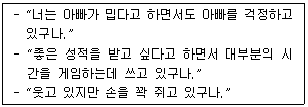
- 직면
- 해석
- 역설적 개입
- 외재화
- 자기개방
(정답률: 알수없음)
5. 청소년 상담자가 적용한 이론적 접근은?
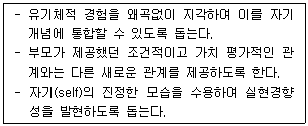
- 인지치료
- 현실치료
- 교류분석
- 게슈탈트치료
- 인간중심치료
(정답률: 알수없음)
6. 3단계 상담과정 중 다음에 제시한 단계에서 청소년 상담자가 해야 할 역할로 옳지 않은 것은?
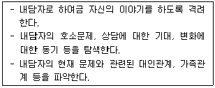
- 관계형성
- 해석하기
- 상담구조화
- 상담목표설정
- 문제 진단과 평가
(정답률: 알수없음)
7. 상담의 이론적 가정과 해당 이론에서 사용하는 주요기법의 연결이 옳은 것은?
- 비합리적 신념의 변화 - 소거
- 자기실현 경향촉진 - 과제부여
- 학습된 경험의 재학습 - 논박하기
- 환경과의 접촉을 통한 알아차림 - 과장하기
- 무의식적 갈등의 의식화 - 홍수법
(정답률: 알수없음)
8. 게슈탈트 상담자가 사용하는 알아차리기 기법에 관한 설명으로 옳지 않은 것은?
- 지금-여기에서 경험하는 욕구와 감정을 알아차리게 돕는다.
- 신체 알아차리기와 책임 알아차리기는 언어수정을 통해 이루어진다.
- 내담자의 자기조절 방해물을 제거하고 미해결 과제의 해결을 돕는다.
- 내담자의 경험을 알아차리고 행동의 주체와 책임을 분명히 인식하도록 돕는다.
- 내담자가 자기 생각을 감추기 위해 사용한 서술문을 의문문으로 고쳐 쓰도록 돕는다.
(정답률: 알수없음)
9. 정화(catharsis)경험을 촉진하는 원리와 방법에 관한 설명으로 옳은 것은?
- 일치성, 존중, 공감과 같은 상담자의 태도가 정화경험을 촉진시킨다.
- 종결단계에서 상담자는 정화경험을 촉진하는 환경을 조성해야 한다.
- 정서적 외상이나 내적 갈등상태를 상징화시켜 표현하는 것을 피해야 한다.
- 정화경험 이후에 현실검증 기회를 제공하지 않아도 치료적 효과가 안정적으로 지속된다.
- 과거의 외상경험을 회상시켜 현재에서 재경험 시킬 때, 외상과 관련된 정서적 연합은 피해야 한다.
(정답률: 알수없음)
10. 행동주의 기법에 관한 설명으로 옳은 것은?
- 부적강화 - 싸움한 학생에게 화장실 청소를 시킨다.
- 혐오치료 - 떠드는 학생에게 칭찬 스티커를 빼앗는다.
- 타임아웃 - 정리정돈을 잘한 학생은 먼저 나갈 수 있도록 해준다.
- 행동조성 - 강아지에게 접근할 때마다 점진적으로 강화하여 강아지를 안을 수 있게 한다.
- 프리맥원리 - 축구를 좋아하는 학생에게 축구를 잘하면 숙제를 면제해주겠다고 한다.
(정답률: 알수없음)
11. 청소년 상담의 특징으로 옳지 않은 것은?
- 청소년의 건전한 발달과 성장을 돕는 예방 및 교육적 측면을 포함한다.
- 청소년 관련 정책의 영향을 받는다.
- 경제적, 사회적 위기에 처한 청소년을 돕는다.
- 또래의 영향을 많이 받는 청소년의 특성을 고려하여 개인상담을 제외하고 집단상담을 한다.
- 청소년 뿐만 아니라 부모, 교사 등 청소년의 주요 관련인과 관련 기관 사람들이 상담대상에 포함된다.
(정답률: 알수없음)
12. 청소년기의 자아중심성 이론에 관한 설명으로 옳은 것은?
- 구체적 조작사고가 발달하는 연령에서 시작된다.
- 다양한 대인관계 경험을 통해 자신과 타인의 객관적 이해가 이루어지면서 감소된다.
- 청소년은 자신이 다른 사람에게 어떻게 보여지는 지에 관해서는 관심을 가지지 않는다.
- 자아중심성에 빠진 청소년들은 물활론적 사고에 기반하여 모든 사물을 자기의 입장에서 본다.
- 자신의 중요성을 과장되게 생각하고 자신의 감정과 사고가 너무 독특하여 다른 사람이 이해할 수 없다고 생각하는 '상상적 청중'의 경향성을 지닌다.
(정답률: 알수없음)
13. 벡(A. Beck) 인지치료의 역기능적 인지도식에 관한 설명으로 옳지 않은 것은?
- 역기능적 인지도식은 부정적 내용의 자동적 사고를 활성화시킨다.
- 역기능적 인지도식을 가진 사람은 심리적 문제나 스트레스에 매우 취약하다.
- 역기능적 인지도식은 추상적 사고가 가능한 청소년기부터 형성되기 시작한다.
- 우울한 사람은 생활사건의 의미를 부정적으로 해석하게 하는 역기능적 인지도식을 지니고 있다.
- 동일한 생활사건의 의미를 사람마다 다르게 해석하는 이유는 사람마다 인지도식이 다르기 때문이다.
(정답률: 알수없음)
14. 다음과 같은 순서를 따르는 상담기법은?
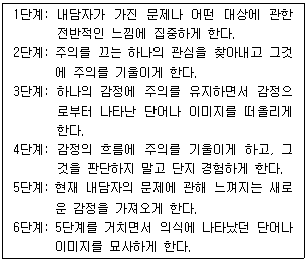
- 사고중지
- 정서도표 그리기
- 감정 표현하기
- 긴장이완 훈련
- 초점 맞추기
(정답률: 알수없음)
15. 합리정서행동치료(REBT)의 ABCDE를 순서대로 제시한 것은?
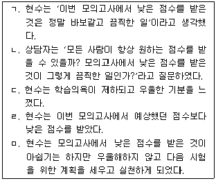
- ㄱ - ㄴ - ㄹ - ㄷ - ㅁ
- ㄱ - ㄷ - ㄴ - ㄹ - ㅁ
- ㄷ - ㄹ - ㄱ - ㄴ - ㅁ
- ㄹ - ㄱ - ㄴ - ㄷ - ㅁ
- ㄹ - ㄱ - ㄷ - ㄴ - ㅁ
(정답률: 알수없음)
16. 청소년 상담자의 상담윤리로 옳지 않은 것은?
- 내담자의 부모가 운영하는 곳이라는 것을 알고 난 후 다른 정비소를 이용하였다.
- 내담자의 불안을 최소화하기 위해 먼저 상담회기를 녹음하고 그 이후에 동의를 얻었다.
- 학습장애로 의뢰된 대학생 내담자에게 상담자가 능력의 한계를 느껴 내담자 동의 하에 다른 전문가에게 의뢰하였다.
- 내담자가 자살에 대해 구체적으로 계획하고 있다는 것을 학부모와 담임교사에게 알렸다.
- 집단 공개 수퍼비전의 사례발표를 위해 사전에 내담자의 동의를 구했다.
(정답률: 알수없음)
17. 아들러학파 개인심리학의 4단계 상담과정 중 2단계에 해당되는 것을 모두 고른 것은?
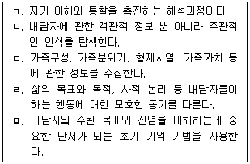
- ㄱ, ㄴ
- ㄱ, ㅁ
- ㄴ, ㄷ, ㅁ
- ㄱ, ㄴ, ㄷ, ㄹ
- ㄴ, ㄷ, ㄹ, ㅁ
(정답률: 알수없음)
18. 글래서(W. Glasser)의 현실치료에 관한 설명으로 옳은 것을 모두 고른 것은?
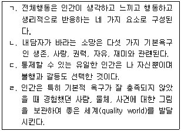
- ㄱ, ㄴ
- ㄷ, ㄹ
- ㄱ, ㄴ, ㄷ
- ㄴ, ㄷ, ㄹ
- ㄱ, ㄴ, ㄷ, ㄹ
(정답률: 알수없음)
19. 청소년 상담자의 태도로 옳지 않은 것은?
- 상담이 어떠한 것인지 내담자에게 알려준다.
- 전문가로서 자신의 한계를 분명히 한다.
- 내담자가 호소하는 문제는 모두 다루어준다.
- 상담목표는 내담자와 합의하여 설정한다.
- 내담자와 관계맺기를 위해 개방적 자세를 취한다.
(정답률: 알수없음)
20. 청소년 상담자가 사용하고 있는 다음 기법에 관한 설명으로 옳지 않은 것은?
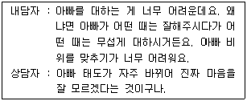
- 의문문을 사용할 수 있다.
- 내담자가 한 말을 상담자가 이해한 말로 되돌려준다.
- 내담자가 이야기한 것을 요약하고 싶을 때 사용할 수 있다.
- 내담자가 주제에 초점을 맞출 수 있도록 비판적 시각에서 판단해주어야 한다.
- 내담자의 말에 대한 핵심을 표현해줌으로써 이해받고 있다는 경험을 줄 수 있다.
(정답률: 알수없음)
21. 청소년 성문제의 특성에 관한 설명으로 옳지 않은 것은?
- 친구관계도 성문제 행동에 영향을 미친다.
- 신체적ㆍ생리적인 급격한 변화로 인해 혼란을 경험한다.
- 가정의 구조적 요인과 양육방식이 성태도에 영향을 미친다.
- 성문제는 다른 유형의 문제와 달라서 학습과정을 통해 형성되지 않는다.
- 성별에 따른 이차 성징이 잘 나타나지 않을 때 부정적 신체상을 갖기 쉽다.
(정답률: 알수없음)
22. 상담기법 중 즉시성에 관한 설명으로 옳지 않은 것은?
- 예상되지 않았던 결과가 초래될 수 있다.
- 회기 중 내담자의 부적절한 행동을 파악하고 변화시키기 위해 사용한다.
- 내담자의 기능과 과거에 대한 구체적인 사실을 파악하기 위해 사용한다.
- 상담과정을 방해하는 치료관계에서의 문제를 표현한다.
- 상담과정에서 발생한 문제를 개방적이고 직접적으로 다루어 적절한 의사소통 기술을 보여준다.
(정답률: 알수없음)
23. 교류분석의 각본모형에 관한 설명으로 옳지 않은 것은?
- 아동의 각본은 부모가 결정해 준 것이다.
- 부모가 각본 메시지를 어떻게 자녀에게 전달하는지를 보여주는 모형이다.
- 허용은 부모의 어린이자아Ⓒ에서 자녀의 어린이자아Ⓒ로 전달된 메시지 중 긍정적인 경우를 말한다.
- 프로그램 메시지는 부모의 어른자아Ⓐ에서 자녀의 어른자아Ⓐ로 전달된 메시지이다.
- 대항금지령은 부모의 부모자아Ⓟ에서 자녀의 부모자아Ⓟ로 전달된 메시지이다.
(정답률: 알수없음)
24. 청소년 내담자의 특징으로 옳은 것을 모두 고른 것은?
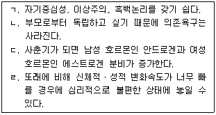
- ㄹ
- ㄱ, ㄴ
- ㄷ, ㄹ
- ㄱ, ㄷ, ㄹ
- ㄴ, ㄷ, ㄹ
(정답률: 알수없음)
25. 해비거스트(R. Havighurst)가 제시한 청소년기의 주요 발달과업을 모두 고른 것은?
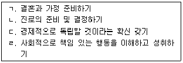
- ㄱ, ㄴ
- ㄱ, ㄹ
- ㄴ, ㄷ
- ㄴ, ㄷ, ㄹ
- ㄱ, ㄴ, ㄷ, ㄹ
(정답률: 알수없음)
26. 개인심리학의 개념인 출생순위에 관한 설명으로 옳은 것을 모두 고른 것은?
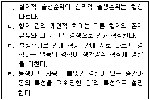
- ㄱ, ㄴ
- ㄴ, ㄷ
- ㄷ, ㄹ
- ㄱ, ㄴ, ㄷ
- ㄴ, ㄷ, ㄹ
(정답률: 알수없음)
27. 다음 상담이론에서 사용하는 주요 기법은?
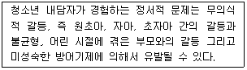
- 전이분석
- 수렁피하기
- 자기지시 훈련
- 비합리적 신념 논박하기
- 지금-여기의 체험에 초점맞추기
(정답률: 알수없음)
28. 상담 종결단계에서 청소년 상담자의 역할로 옳지 않은 것은?
- 상담성과를 점검한다.
- 내담자의 행동변화 요인을 평가한다.
- 종결과 관련된 내담자의 감정을 파악한다.
- 내담자의 호소문제와 관련된 감정을 탐색한다.
- 내담자가 이전 단계에서 얻은 통찰을 실행으로 옮길 수 있도록 돕는다.
(정답률: 알수없음)
29. 감정반영 기술에 관한 설명으로 옳은 것을 모두 고른 것은?
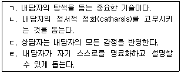
- ㄱ, ㄴ
- ㄷ, ㄹ
- ㄱ, ㄴ, ㄹ
- ㄴ, ㄷ, ㄹ
- ㄱ, ㄴ, ㄷ, ㄹ
(정답률: 알수없음)
30. 사이버 상담의 장점을 모두 고른 것은?
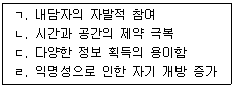
- ㄱ, ㄴ
- ㄱ, ㄹ
- ㄱ, ㄴ, ㄹ
- ㄴ, ㄷ, ㄹ
- ㄱ, ㄴ, ㄷ, ㄹ
(정답률: 알수없음)
2과목: 상담연구방법론의 기초
31. 가설에 관한 설명으로 옳지 않은 것은?
- 추상적이어야 한다.
- 논리적으로 간결해야 한다.
- 이론적 근거가 있어야 한다.
- 검증 가능해야 한다.
- 연구를 통해 진위 여부를 검증해야 한다.
(정답률: 알수없음)
32. 성격 특성(traits)을 측정하는 도구를 선택할 때 고려해야 할 사항으로 옳은 것을 모두 고른 것은?
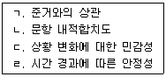
- ㄱ, ㄴ
- ㄱ, ㄷ
- ㄱ, ㄴ, ㄷ
- ㄴ, ㄷ, ㄹ
- ㄱ, ㄴ, ㄷ, ㄹ
(정답률: 알수없음)
33. 5점 리커트 척도인 외향성 검사의 신뢰도 추정방법으로 옳지 않은 것은?
- KR-20
- 반분 신뢰도
- Cronbach의 알파(α)
- 동형검사 신뢰도
- 검사-재검사 신뢰도
(정답률: 알수없음)
34. 두 변수가 모두 이분변수인 경우에 가장 적합한 상관계수는?
- 파이(phi) 계수
- 스피어만(Spearman) 등위상관계수
- 점이연(point biserial) 상관계수
- 이연(biserial) 상관계수
- 피어슨(Pearson) 상관계수
(정답률: 알수없음)
35. 논문의 서론에 기술되어야 할 내용과 거리가 먼 것은?
- 통계적 가설
- 연구의 범위
- 연구의 목적
- 연구의 필요성
- 연구문제
(정답률: 알수없음)
36. 조작적 정의에 관한 설명으로 옳지 않은 것은?
- 측정 가능한 형태로 진술된다.
- 구체적일수록 반복연구의 수행이 쉽다.
- 한 구인에는 단 한 가지의 조작적 정의가 존재한다.
- 측정하고자 하는 구인과 논리적 관련성이 높다.
- 지식이 축적되면 조작적 정의를 변경해야 하는 경우가 발생하기도 한다.
(정답률: 알수없음)
37. 근거이론 연구에 관한 설명으로 옳지 않은 것은?
- 개방코딩, 축코딩, 선택코딩의 분석 과정을 거친다.
- 축코딩에서 정보의 범주를 만들어 낸다.
- 지속적 비교방법을 이용하여 분석해 나간다.
- 포화가 이루어질 때까지 자료를 계속 수집한다.
- 인과적 조건이란 현상에 영향을 미치는 사건을 일컫는다.
(정답률: 알수없음)
38. Tukey의 HSD 검증법에 관한 설명은?
- 1종 오류 가능성이 가장 낮은 사후 비교방법
- 검정력이 가장 낮은 보수적인 사후 비교방법
- 사전 계획 비교방법
- 집단별 사례 수가 다른 경우에 사용하는 방법
- 개별 평균의 짝(단순쌍)별 사후 비교방법
(정답률: 알수없음)
39. 다중공선성에 관한 설명으로 옳지 않은 것은?
- 분산확대인자(VIF)로 파악할 수 있다.
- 종속변수에 대한 독립변수의 영향력이 왜곡된다.
- 독립변수 사이의 상호의존도를 말한다.
- 1.0보다 큰 표준화 회귀계수가 나타날 수 있다.
- 단순회귀분석에서도 발견된다.
(정답률: 알수없음)
40. 다음과 같은 특징을 갖는 표집방법은?
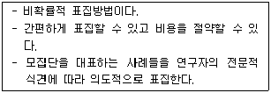
- 유층표집(stratified sampling)
- 무선표집(random sampling)
- 목적표집(purposive sampling)
- 군집표집(cluster sampling)
- 체계적 표집(systematic sampling)
(정답률: 알수없음)
41. 상담 전에 실시하는 교육 프로그램 참석 여부에 따라 조기종결 여부에 차이가 있는지를 검증하는 방법은?
- 두 종속표본 점수의 차에 대한 Sign 검정
- 두 종속표본 비율의 차에 대한 McNemar 검정
- 두 독립표본 중앙값의 차이에 대한 Median 검정
- 두 독립표본 비율의 차에 대한 Fisher의 정확검정
- 두 독립표본 중앙값의 차이에 대한 Mann-Whitney U 검정
(정답률: 알수없음)
42. 연구설계의 타당도 종류와 그에 대한 위협요인을 옳게 짝지은 것은?
- 외적 타당도 - 역사, 성숙
- 내적 타당도 - 낮은 통계적 검증력, 통계적 가정의 위반
- 내용 타당도 - 반응의 무작위적 다양성, 피험자의 무작위적 이질성
- 가설 타당도 - 선발과 처치의 상호작용, 시기와 처치의 상호작용
- 구성개념 타당도 - 변인에 대한 단일조작적 편향, 한 가지 측정방법만을 사용
(정답률: 알수없음)
43. 다음에 제시한 상담 연구윤리 원칙은?
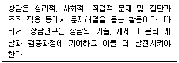
- 신용의 원칙
- 무피해의 원칙
- 연구자율성의 원칙
- 연구개발의 원칙
- 이익의 원칙
(정답률: 알수없음)
44. 단일대상연구에 관한 설명으로 옳지 않은 것은?
- 혐오적 중재를 사용하기 전에 대안적인 중재 방안을 탐색한다.
- 체계적 반복은 실험 조건을 의도적으로 변경하여 반복연구를 수행하는 것이다.
- 기초선이란 중재 없이 자료들을 수집하는 것이다.
- 목표행동의 민감한 변화는 한 번만 측정한다.
- 대상자의 수는 연구자의 의도에 의하여 결정된다.
(정답률: 알수없음)
45. '상담자에 대한 애착'과 '작업동맹'이 서로 구분되는 독특한 구인이라 할 수 있는지 검토하려 한다. 이때 활용할 수 있는 분석방법과 그 설명이 옳은 것은?
- 회귀분석 - 종속변수와의 상관이 높은 변수를 먼저 투입해야 한다.
- 분산분석 - 두 변수의 분산이 동일하다고 볼 수 있는지를 검증해야 한다.
- 분산분석 - 종속변수에 대한 두 변수의 주효과가 유의하지 않아야 서로 다른 구인이라 할 수 있다.
- 회귀분석 - 두 변수를 모두 투입하였을 때 나타나는 R2 값이 유의해야 서로 다른 구인이라 할 수 있다.
- 회귀분석 - 두 번째 변수의 투입 후 설명량의 증가(△R2)가 통계적으로 유의해야 서로 다른 구인이라 할 수 있다.
(정답률: 알수없음)
46. 상담 연구 및 출판의 윤리적 문제에 관한 설명으로 옳지 않은 것은?
- 누구의 아이디어인지 모를 경우에도 인용표기를 하지 않으면 표절에 해당한다.
- 논문작성자가 실제로 참고하지는 않았지만 중요하다고 판단한 원문헌은 재인용 표시없이 참고문헌에 직접 제시한다.
- 기존 연구의 문제와 방법을 반복한 경우 그 연구 목적과 반복한 사실 등을 밝히면 표절이 아니다.
- 연구 공헌도는 논문 작성 투여 시간과 학문적 중요성으로 평가해 볼 수 있다.
- 논문 작성자가 타당한 자료를 수집하지 못하는 것은 윤리적 문제이며 동시에 연구의 타당도 문제이기도 하다.
(정답률: 알수없음)
47. 과학자-실무자 훈련 모델이 지향하는 '과학적으로 생각하는 상담자'로 볼 수 있는 것은?
- 내담자에 대한 느낌을 객관적 사실로 받아들인다.
- 상담의 성과를 주관적 경험주의에 근거해서 평가한다.
- 다른 상담자의 연구성과를 체계적으로 활용한다.
- 질적 연구를 사변적 연구로 본다.
- 내담자에 관한 가설의 타당성 여부를 직관적으로 판단한다.
(정답률: 알수없음)
48. 라틴정방형설계에 관한 설명으로 옳은 것은?
- 특정 독립변수의 특정 처치수준이 모든 행(피험자군)과 열(처치순서)에 단 한번씩 나타난다.
- 종속변수를 주기적으로 측정하는 실험설계이다.
- 처치의 이월 효과를 통제하기 어렵다.
- 처치와 구획 간의 상호작용 효과가 없다.
- 유사 특성을 기반으로 실험집단을 정방형 구획하여 배치한다.
(정답률: 알수없음)
49. 교대중재(alternating treatments)설계에 관한 설명으로 옳은 것은?
- 유사한 두 중재에 대하여 중다기초선설계를 동시에 실시하는 방식이다.
- 한 대상자에게 동시에 중재를 실시함에 따라 대상자가 중재들을 변별하기 어려울 수 있다.
- 체계적으로 중재 간 균형을 맞추어 중다중재설계에서 보이는 중재 간 전이 문제를 해결한다.
- 중재변인을 이용하여 목표행동의 점진적이고 단계적 변화를 이루고자 할 때 사용한다.
- 복수의 기초선을 측정하여 순차적으로 중재를 적용하는 방식이다.
(정답률: 알수없음)
50. 5가지 상담기법의 효과 차이를 검증하기 위하여 각 집단에 10명씩 총 50명을 무선배치하였다. 분석결과가 다음과 같을 때 (A)에 해당하는 값은?
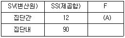
- 1.0
- 1.5
- 2.0
- 2.5
- 3.0
(정답률: 알수없음)
51. A척도(평균 50, 표준편차 5)의 준거관련 타당도를 추정하기 위하여 B척도(평균 10, 표준편차 4)와 상관관계를 계산한 결과 rAB = 0.8로 나타났다. 다음 중 옳지 않은 것은?
- A척도에서 타당하지 못한 점수의 분산 비율은 0.2이다.
- A척도에서 B척도와 공유하는 점수의 분산은 16이다.
- A척도에서 B척도와 공유하지 않는 점수의 분산은 9이다.
- A척도에서 B척도와 공유하는 점수의 분산 비율은 0.64이다.
- A척도의 점수로 B척도의 점수를 예언할 때, 예언된 점수와 실제 점수 간 차이의 표준편차는 2.4이다.
(정답률: 알수없음)
52. 모의상담연구에 관한 설명으로 옳은 것을 모두 고른 것은?
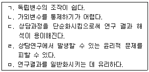
- ㄱ
- ㄱ, ㄷ
- ㄴ, ㄷ
- ㄱ, ㄷ, ㄹ
- ㄱ, ㄴ, ㄷ, ㅁ
(정답률: 알수없음)
53. 공분산분석의 기본 가정으로 옳은 것을 모두 고른 것은?
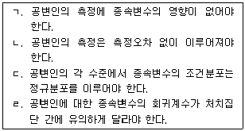
- ㄱ
- ㄴ
- ㄱ, ㄷ
- ㄴ, ㄷ
- ㄴ, ㄷ, ㄹ
(정답률: 알수없음)
54. 상담의 효과성 연구에서 통계적 결론 타당도를 높이는 방법으로 옳은 것을 모두 고른 것은?
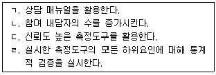
- ㄱ, ㄴ
- ㄱ, ㄴ, ㄷ
- ㄱ, ㄷ, ㄹ
- ㄴ, ㄷ, ㄹ
- ㄱ, ㄴ, ㄷ, ㄹ
(정답률: 알수없음)
55. 메타분석에서 각 연구의 효과크기(ES)를 옳게 제시한 것은?
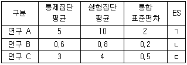
- ㄱ: 2.5, ㄴ: 3, ㄷ: 2
- ㄱ: 5, ㄴ: 4, ㄷ: 2
- ㄱ: 2.5, ㄴ: 1, ㄷ: 2
- ㄱ: 5, ㄴ: 2, ㄷ: 1
- ㄱ: 5, ㄴ: 1, ㄷ: 1
(정답률: 알수없음)
56. 평균 100, 표준편차 15, 신뢰도 계수 0.6인 척도에 관한 설명으로 옳은 것은?
- 측정의 표준오차는 15√0.4이다.
- 관찰점수 분산에 대한 진점수 분산의 비율은 0.36이다.
- 관찰점수 분산에 대한 오차점수 분산의 비율은 0.64이다.
- 이 척도의 규준집단에서 95%는 85~115점을 받았다고 볼 수 있다.
- 이 척도에서 120점을 받은 사람의 진점수가 90~150에 있을 확률은 95%이다.
(정답률: 알수없음)
57. 합의적 질적 연구법(CQR)에 관한 설명으로 옳은 것은?
- 단일 평정자가 자료를 분석하여 일관성을 높인다.
- 상호적인 자료 수집 방법을 사용한다는 점에서 실증주의적 입장을 취한다.
- 연구자와 참여자는 상호 간에 영향을 미치지 않는 것으로 본다.
- 분석과정에서 영역, 중심개념, 교차분석을 사용한다.
- 질적 자료를 사용하기 때문에 자료 분석을 하는데 숫자를 사용하지 않는다.
(정답률: 알수없음)
58. A시 고등학생 1,000명을 무선표집하여 수학 적성검사의 검사-재검사 신뢰도를 구한 결과 0.7로 나타났다. 같은 시의 일반 고등학교 10개교에서 내신성적 기준 상위 5% 내의 학생 200명을 무선표집하여 이 측정도구를 실시하였다. 이 때 기대되는 검사-재검사 신뢰도 추정값의 변화 이유와 그 결과를 바르게 제시한 것은?
- 수학 적성검사의 점수 범위가 좁아지므로 검사-재검사 신뢰도 계수는 높아진다.
- 수학 적성검사의 점수 범위가 좁아지므로 검사-재검사 신뢰도 계수는 낮아진다.
- 수학 적성검사의 점수 범위가 넓어지므로 검사-재검사 신뢰도 계수는 낮아진다.
- 수학 적성검사의 점수 범위가 넓어지므로 검사-재검사 신뢰도 계수는 높아진다.
- 수학 적성검사의 점수 범위가 넓어져도 검사-재검사 신뢰도 계수는 변하지 않는다.
(정답률: 알수없음)
59. 유의미한 결과를 얻기 위한 연구참여자의 선정방법으로 옳은 것을 모두 고른 것은?
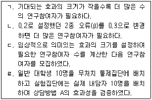
- ㄱ, ㄴ
- ㄱ, ㄷ
- ㄴ, ㄹ
- ㄱ, ㄴ, ㄷ
- ㄴ, ㄷ, ㄹ
(정답률: 알수없음)
60. 코호트 설계에 관한 설명으로 옳은 것을 모두 고른 것은?
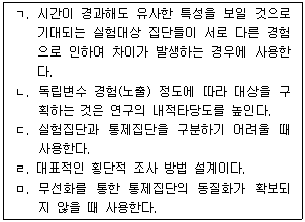
- ㄱ
- ㄱ, ㄴ
- ㄴ, ㄷ
- ㄱ, ㄷ, ㄹ
- ㄱ, ㄹ, ㅁ
(정답률: 알수없음)
3과목: 심리측정 평가의 활용
61. 다음 사례에서 공통적으로 나타날 수 있는 MMPI-2 상승척도 쌍은?
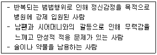
- 1-3
- 2-4
- 2-9
- 6-8
- 7-8
(정답률: 알수없음)
62. MMPI-2의 각 척도와 하위영역 소척도의 짝이 옳게 연결된 것은?
- 임상척도-분노(ANG) 척도
- 재구성임상척도-우울(DEP) 척도
- 내용척도-억압(R) 척도
- 보충척도-외상 후 스트레스장애(PK) 척도
- 성격병리 5요인 척도-반사회성(Anti-Social) 척도
(정답률: 알수없음)
63. 투사적 성격검사와 비교했을 때 객관적 성격검사의 특징으로 옳은 것은?
- 반응을 쉽게 왜곡할 수 있다.
- 신뢰도와 타당도가 낮다.
- 무의식적 심리 특성이 반영된다.
- 평가자에 따라 결과의 해석이 다양하다.
- 반응 범위가 다양하다.
(정답률: 알수없음)
64. 행동관찰법과 그 특징을 옳게 연결한 것을 모두 고른 것은?
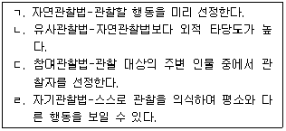
- ㄱ, ㄷ
- ㄴ, ㄹ
- ㄱ, ㄴ, ㄷ
- ㄱ, ㄷ, ㄹ
- ㄱ, ㄴ, ㄷ, ㄹ
(정답률: 알수없음)
65. 중학생 A양은 중간고사 성적이 발표된 이후 주의집중 곤란 및 판단력과 기억력 저하를 호소하였다. 이와 관련된 MMPI-2 임상척도의 Harris-Lingoes 소척도는 무엇인가?
- Pd1 가정불화
- D4 둔감성
- Hy3 권태-무기력
- Sc2 정서적 소외
- Pa2 예민성
(정답률: 알수없음)
66. 자기보고식 성격검사에 관한 설명으로 옳지 않은 것은?
- NEO-PI-R에서 성실성(C)은 한 개인이 지향하는 대인관계적 특성을 평가한다.
- 성격평가질문지(PAI)에는 실제보다 더 좋게 보이려는 태도를 평가할 수 있는 척도가 있다.
- 기질 및 성격검사(TCI)에서 인내력(persistence)은 기질척도에 해당된다.
- MBTI에서 외향성(E)-내향성(I)은 주의집중과 에너지의 방향을 나타내는 지표이다.
- MMPI-2에서 L척도를 통해 세련되지 못한 방어적 태도를 탐색할 수 있다.
(정답률: 알수없음)
67. 주제통각검사(TAT)의 실시방법으로 옳지 않은 것은?
- 검사 카드는 수검자의 성별과 연령에 따라 선택해야 한다.
- 의심이 많거나 저항이 강하면 다른 검사를 먼저 시행하는 것이 반응을 이끌어내는 데 도움이 된다.
- 검사 카드에 대해 과거, 현재, 미래 및 인물의 생각과 느낌을 말하라고 지시한다.
- 수검자의 지능이나 연령을 고려하여 지시문을 변경할 수 있다.
- 필요한 정보가 있으면 수검자가 반응을 하고 있을 때 질문을 한다.
(정답률: 알수없음)
68. 다음에 제시된 각 검사의 점수 범위가 나머지와 다른 것은?
- K-WISC-Ⅳ 전체 IQ 85∼115
- 불안검사 Z점수 -1∼+1
- MMPI-2 우울척도 T점수 40∼60
- K-WAIS-Ⅳ 토막짜기 소검사 환산점수 7∼13
- 분노검사 점수 백분위 25∼75
(정답률: 알수없음)
69. 심리검사 개발 시 고려할 타당도에 관한 설명으로 옳은 것은?
- 수렴타당도는 준거타당도에 포함된다.
- 예측타당도는 검사가 우선 실시되고 준거는 나중에 측정된다.
- 내용타당도는 요인분석을 통해 검사문항 간의 관계를 분석한다.
- 안면타당도는 검사를 개발한 해당 전문가의 시각에 근거한다.
- 변별타당도는 단축형 검사를 개발한 경우 원검사와의 관련성을 알아볼 때 사용한다.
(정답률: 알수없음)
70. MMPI-2와 로르샤하(Rorschach) 검사에서 정신병리의 심각성과 지각적 왜곡의 문제를 탐색할 수 있는 척도와 지표로 옳은 것은?
- F척도, X-%
- Sc척도, EB
- Pa척도, a:p
- Pt척도, EA
- K척도, Afr
(정답률: 알수없음)
71. 면접법에 관한 설명으로 옳은 것은?
- 개방형 질문은 수검자의 독특한 반응을 억제한다.
- 구조화된 면접은 초보 면담자의 진단 신뢰도를 높인다.
- 반구조화된 면접은 면접자의 판단에 따라 질문 내용과 순서를 수정할 수 없다.
- 비구조화된 면접은 구조화된 면접보다 수동적이고 의존적인 수검자에게 더 유용하다.
- 폐쇄형 질문은 성 또는 학대와 같은 문제를 확인하기에 부적합하다.
(정답률: 알수없음)
72. 행동관찰에서 나타날 수 있는 오류의 원인에 관한 설명으로 옳지 않은 것은?
- 표적행동의 명확성 수준
- 관찰자로 인한 반응 억제 수준
- 관찰자의 훈련 수준
- 반응 빈도 수준
- 측정할 준거의 일관성 수준
(정답률: 알수없음)
73. 고등학생 K군은 청소년 분노검사에서 24점이 나왔으며 이 검사는 평균 18점, 표준편차 3, 표준오차 2이다. K군의 원점수를 평균 50점, 표준편차 10인 T점수로 환산하면?
- 60
- 65
- 70
- 75
- 80
(정답률: 알수없음)
74. 심리검사를 제작하는 순서를 옳게 나열한 것은?
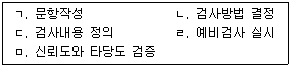
- ㄱ-ㄷ-ㄹ-ㅁ-ㄴ
- ㄴ-ㄱ-ㄷ-ㅁ-ㄹ
- ㄴ-ㄷ-ㄱ-ㄹ-ㅁ
- ㄷ-ㄴ-ㄱ-ㄹ-ㅁ
- ㄷ-ㄴ-ㄱ-ㅁ-ㄹ
(정답률: 알수없음)
75. 그림검사에 관한 설명으로 옳지 않은 것은?
- 그림검사는 언어적, 문화적 제약이 적다.
- H-T-P 검사에서 집과 나무를 그릴 때 종이를 가로로 제시한다.
- 인물화검사(DAP)는 지능과 성격을 파악하는 데 유용하다.
- H-T-P 검사에서 나무 그림은 사람 그림에 비해 무의식적 수준의 성격구조를 반영한다.
- 인물화검사(DAP)에서는 수검자가 처음 그린 사람의 성별을 질문한다.
(정답률: 알수없음)
76. 표준편차에 관한 설명으로 옳지 않은 것은?
- 변량의 제곱근이다.
- 분포의 대표값 중 하나이다.
- 극단적인 점수의 영향을 받는다.
- 점수 분포의 변산성을 기술하는 통계치이다.
- 점수들이 평균과 차이를 보이는 정도의 평균치이다.
(정답률: 알수없음)
77. 심리검사 선택 시 고려할 사항을 모두 고른 것은?
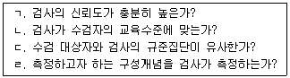
- ㄱ, ㄴ, ㄷ
- ㄱ, ㄴ, ㄹ
- ㄱ, ㄷ, ㄹ
- ㄴ, ㄷ, ㄹ
- ㄱ, ㄴ, ㄷ, ㄹ
(정답률: 알수없음)
78. 웩슬러 성인용 지능검사 4판(WAIS-IV)에 새로 추가된 소검사를 모두 고른 것은?
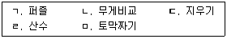
- ㄱ, ㄴ, ㄷ
- ㄱ, ㄴ, ㄹ
- ㄱ, ㄷ, ㅁ
- ㄴ, ㄷ, ㄹ
- ㄴ, ㄹ, ㅁ
(정답률: 알수없음)
79. 써스톤(L. Thurstone)이 명명한 7가지 기초정신능력(primary mental ability)이 아닌 것은?
- 기억력
- 어휘유창성
- 언어이해력
- 추상적 사고능력
- 공간능력
(정답률: 알수없음)
80. 심리평가 과정에서 임상적 판단의 정확성을 높이는 방안과 가장 거리가 먼 것은?
- 바넘 효과(Barnum effect)를 임상적 판단의 기초로 삼는다.
- 기억에 의존하기보다 정보를 가능한 상세하게 기록한다.
- 관련 문헌을 참고하여 과거의 경향과 새로운 경향을 파악한다.
- 평가자는 자신의 판단이 얼마나 정확한지에 대해 피드백을 받는다.
- 평가자는 자신이 세운 가설을 지지하는 자료와 지지하지 않는 자료를 함께 고려한다.
(정답률: 알수없음)
81. 최대수행검사에 관한 설명으로 옳지 않은 것은?
- 직업적성검사는 최대수행검사에 속한다.
- 신경심리검사는 최대수행검사에 속한다.
- 주로 인지적 기능 또는 발달적 기능의 수준과 양상을 측정한다.
- 정확한 측정을 위해 검사 실시 전 검사자는 최대한 수검자와의 상호작용을 지양한다.
- 수검자가 자신의 능력을 최대한 발휘하려고 노력한다는 것을 전제로 한다.
(정답률: 알수없음)
82. 심리검사의 역사에 관한 설명으로 옳은 것은?
- 성인용 집단지능검사는 제 2차 세계대전 중 최초로 개발되었다.
- 현대적인 의미의 최초 지능검사는 스탠포드-비네(Stanford-Binet) 검사이다.
- 카텔(J. Cattell)은 정신검사(mental test)라는 용어를 처음으로 제안한 사람이다.
- 로르샤하(Rorschach) 검사는 개발 당시 20장의 카드로 구성되었다.
- 군대 알파(Army Alpha) 검사는 제 1차 세계대전 중 문맹자나 영어를 모르는 외국인을 위해 개발되었다.
(정답률: 알수없음)
83. 웩슬러 성인용 지능검사 4판(WAIS-IV)의 실시방법으로 옳은 것은?
- 순서화 소검사는 되돌아가기 규칙이 있다.
- 숫자 소검사에서 숫자는 2초에 하나씩 불러준다.
- 이해 소검사에서 문항에 제시된 단어의 의미는 수검자가 요청해도 설명하지 않는다.
- 산수 소검사에서 수검자가 요청할 경우 문항 당 지시문을 두 번까지 반복해서 읽어줄 수 있다.
- 산수 소검사 수행시간 측정 중 수검자가 지시문을 다시 요청할 경우 시간 측정을 멈추고 읽어준다.
(정답률: 알수없음)
84. 심리검사가 측정하는 심리적 속성에 관한 설명으로 옳지 않은 것은?
- 추상적이다.
- 이론적 구성개념이다.
- 심리적 측정을 통해 객관화가 가능하다.
- 심리적 속성의 측정은 조작적 정의를 통해 이루어진다.
- 직접적인 측정이 가능하다.
(정답률: 알수없음)
85. 웩슬러 성인용 지능검사 4판(WAIS-IV) 소검사 중 시간제한이 없는 것은?
- 행렬추론
- 퍼즐
- 무게비교
- 기호쓰기
- 빠진곳찾기
(정답률: 알수없음)
86. 편차지능지수에 관한 설명으로 옳은 것은?
- 정규분포 가정이 적용되지 않는다.
- 비네-시몽(Binet-Simon) 검사에서 사용한 지수이다.
- 한 개인의 점수는 같은 연령 수준 내에서 비교된다.
- 산출된 지능지수는 연령에 따라 다르게 해석된다.
- 비율지능지수에 비해 중년 집단에의 적용에는 한계가 있다.
(정답률: 알수없음)
87. 심리평가에 관한 설명으로 옳지 않은 것은?
- 평가자의 주관적 요소가 개입된다.
- 수검자의 문제해결을 돕는 전문적 활동이다.
- 다양한 방식으로 얻은 정보들을 통합하는 과정이다.
- 심리검사, 면담, 행동관찰 등 다양한 방식으로 구성된다.
- 표준방식에 따라 모든 수검자에게 동일하게 진행된다.
(정답률: 알수없음)
88. Exner 종합체계에 따른 로르샤하(Rorschach) 검사의 채점에 관한 설명으로 옳은 것은?
- S는 단독으로 기호화할 수 없다.
- 평범반응(P)을 기호화할 때 평가자의 주관적 기준에 따른다.
- 잉크반점의 전체와 흰 공간을 사용한 경우 W로 기호화한다.
- 잉크반점 중 아주 작은 부분이 제외되어도 W로 기호화할 수 있다.
- 사람들이 흔히 사용하는 부분에 대해 반응한 경우 Dd로 기호화한다.
(정답률: 알수없음)
89. 문장완성검사에 관한 설명으로 옳은 것은?
- 검사시간에 제한이 있다.
- 집단에게는 실시될 수 없다.
- 로르샤하(Rorschach) 검사나 주제통각검사(TAT)에 비해 덜 구조화되어 있다.
- 검사의 객관성을 위해 검사자는 문항에 대한 추가적인 질문을 해서는 안된다.
- 자유연상을 토대로 하는 투사적 검사이다.
(정답률: 알수없음)
90. 주제통각검사(TAT)에서 다음과 같이 반응할 가능성이 가장 높은 장애는?
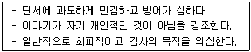
- 경조증
- 우울증
- 편집성 성격장애
- 강박장애
- 히스테리성 성격장애
(정답률: 알수없음)
4과목: 이상심리
91. 정신장애 발병에 관한 취약성-스트레스 모형에서 취약성 요인으로 볼 수 없는 것은?
- 유전적 이상
- 직업의 변화
- 뇌 신경이상
- 개인의 성격적 특성
- 어린 시절 부모의 학대
(정답률: 알수없음)
92. 양극성 및 관련장애에 관한 설명으로 옳지 않은 것은?
- 양극성장애는 주요우울장애에 비해 유전적 요인에 의해서 더 많은 영향을 받는다.
- 순환감정장애는 조증과 우울증 삽화가 6개월 이상 번갈아 나타나는 경우를 말한다.
- 제 1형 양극성장애는 기분이 비정상적으로 고양되는 조증 삽화가 적어도 1주일 이상 분명하게 지속되어야 한다.
- 갑상선 기능항진증과 같은 신체적 질병의 직접적인 생리적 효과로 인한 것은 해당되지 않는다.
- 제 2형 양극성장애는 제 1형 양극성장애와 유사하지만 조증 삽화의 증상이 상대적으로 미약한 경조증 삽화를 보인다.
(정답률: 알수없음)
93. 간헐적 폭발성장애에 관한 설명으로 옳지 않은 것은?
- 공격적 충동이 조절되지 않는다.
- 언어적 공격행위나 신체적 공격행위가 반복해서 폭발적으로 나타난다.
- 장애로 인하여 직업을 잃고, 학교에 적응하지 못하고 심할 경우 투옥되기도 한다.
- 자극사건이나 심리사회적 스트레스에 비해 공격성의 정도가 지나치게 높다.
- 공격적 행동을 하고 나서 죄책감을 느끼지 않으며 오히려 편안한 모습을 보인다.
(정답률: 알수없음)
94. 다음의 사례는 어떤 성격장애에 해당하는가?
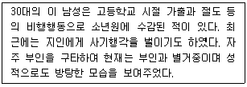
- 분열성
- 편집성
- 연극성
- 반사회성
- 자기애성
(정답률: 알수없음)
95. 성격장애를 크게 A, B, C 군집으로 분류할 때 C군의 속하는 것을 올바로 묶은 것은?
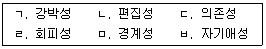
- ㄱ, ㄴ, ㄷ
- ㄱ, ㄷ, ㄹ
- ㄴ, ㄹ, ㅁ
- ㄷ, ㅁ, ㅂ
- ㄹ, ㅁ, ㅂ
(정답률: 알수없음)
96. DSM-5에서 비물질 관련 장애(non-substance-related disorders)에 포함된 것은?
- 도박 중독(gambling disorder)
- 섹스 중독(sex addiction)
- 쇼핑 중독(shopping addiction)
- 인터넷 중독(internet addiction)
- 디지털 미디어 중독(digital media disorder)
(정답률: 알수없음)
97. 주요우울장애에 관한 설명으로 옳지 않은 것은?
- 남자보다 여자에게서 더 흔한 장애이다.
- 우울장애군(depressive disorders) 중에서 가장 심한 장애이다.
- 정신분석이론에서는 분노가 무의식적으로 자신에게 향해진 것으로 본다.
- 인지이론에서는 우울한 사람은 부정적 사고를 하는 경향이 있다고 본다.
- 주요우울장애를 한번 경험한 사람은 면역력이 생겨 재발 가능성이 낮아진다.
(정답률: 알수없음)
98. 물질장애는 정신기능에 미치는 영향에 따라 흥분제, 진정제, 환각제 등으로 구분할 수 있다. 다음 중 진정제(sedatives)에 속하는 것은?
- 알코올
- 코카인
- 필로폰
- 카페인
- 엑스터시
(정답률: 알수없음)
99. 도벽증에 관한 설명으로 옳지 않은 것은?
- 분노나 복수심을 표현하기 위해서 물건을 훔치는 것은 아니다.
- 망상이나 환청에 대한 반응으로 물건을 훔치는 것은 아니다.
- 경제적 필요 때문에 훔치며, 훔치려는 욕구는 조절할 수 있다.
- 물건을 훔치기 직전에 긴장감이 높아지며, 물건을 훔치고 나서 만족감과 안도감을 느낀다.
- 정신분석적 입장에서 물건을 훔치는 행동이 아동기에 잃어버린 애정과 쾌락에 대한 대체물을 추구하는 행위로 본다.
(정답률: 알수없음)
100. 조현병(정신분열병)환자의 대표적인 음성 증상을 모두 고른 것은?
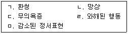
- ㄱ, ㄴ
- ㄴ, ㄷ
- ㄷ, ㄹ
- ㄷ, ㅁ
- ㄹ, ㅁ
(정답률: 알수없음)
101. DSM-5의 수면이상증(parasomnias)에 해당되는 것은?
- 수면발작증
- 과도수면장애
- 호흡 관련 수면장애
- 비REM수면 각성장애
- 일주기 리듬-수면 각성장애
(정답률: 알수없음)
102. 조현병(정신분열병) 증상이 1개월 이상 6개월 이내로 나타나는 것은?
- 망상장애
- 분열형 성격장애
- 단기 정신증적 장애
- 정신분열형 장애
- 약화된 정신증 증후군
(정답률: 알수없음)
103. 신경성 폭식증에 관한 설명으로 옳지 않은 것은?
- 우울증을 동반하는 경우가 많은 편이다.
- 신경성 식욕부진증에서 발전하기도 한다.
- 신경성 식욕부진증의 경우와 달리 주로 아동기에 발병한다.
- 폭식 행동은 주로 밤에 혼자 있을 때, 스트레스를 받았을 때 자주 나타난다.
- 성격적 문제, 대인관계의 어려움, 충동통제의 어려움, 약물남용의 문제를 수반하기도 한다.
(정답률: 알수없음)
104. 망상장애 중 가장 높은 유병률을 보이는 하위유형은?
- 신체형
- 과대형
- 질투형
- 색정형
- 피해형
(정답률: 알수없음)
1⑤. 다음의 내담자에게 우선적으로 고려해야 할 개입방법은?
- 약물치료
- 운동재활
- 행동치료
- 가족치료
- 스트레스 관리
(정답률: 알수없음)
106. 정신장애의 원인에 관한 사회적 유발설의 주장으로 옳은 것은?
- 낮은 사회경제적 지위가 정신장애를 유발한다.
- 상이한 사회문화적 환경에서도 일정한 정신장애의 발병률이 유지된다.
- 생물학적 취약성과 사회적 스트레스의 결합이 정신장애의 발병률을 결정한다.
- 정신장애를 겪게 되면 그 결과로 사회경제적 지위가 낮아진다.
- 정신장애와 관련된 사회경제적 불이익을 인정하지 않는다.
(정답률: 알수없음)
107. DSM이나 ICD에 의한 이상행동의 분류 및 진단에 관한 설명으로 옳은 것은?
- 환자의 예후에 관한 정보는 포함되지 않는다.
- 과학연구에는 유용하지만 임상적 활용도는 낮다.
- 기본적으로 범주적인 질적 특성의 차이를 가정한다.
- 자기충족적 예언(self-fulfilling prophecy)의 효과는 나타나지 않는다.
- 개인의 특수성 및 환경적 영향을 중시한다.
(정답률: 알수없음)
108. 생물심리사회적 모형의 근간인 체계이론의 가정으로 옳지 않은 것은?
- 전체는 부분의 합 이상
- 동일결과성(equifinality)의 원리
- 다중결과성(multifinality)의 원리
- 핵심 요소를 강조하는 환원론
- 상호적 인과론
(정답률: 알수없음)
109. 외상후 스트레스 장애의 발생 및 악화에 기여하는 위험요인으로 옳지 않은 것은?
- 정신장애 가족력
- 심한 음주 및 도박
- 의존적 성격특성
- 자기 운명에 대한 외부적 통제소재
- 외상 기억 회피시도의 억제
(정답률: 알수없음)
110. 정신장애의 기질적 원인론과 관련이 없는 것은?
- 뇌질환론
- 우생학적 단종 주장
- 향정신성 약물의 효과 보고
- 매독과 진행성 마비 증상의 연관성 보고
- 히스테리성 장애에 관한 매스머(F. Mesmer)의 치료 시도 보고
(정답률: 알수없음)
111. 다음에 해당하는 DSM-5의 장애는?
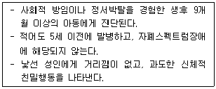
- 반응성 애착장애
- 외상성 애착장애
- 탈억제 사회관여장애
- 탈애착 사회관여장애
- 외상성 애착 및 사회관여장애
(정답률: 알수없음)
112. 이인증(depersonalization)장애에 관한 설명으로 옳지 않은 것은?
- 청각적 증상은 경험하지 않지만, 거시증이나 미시증 등의 시각적 증상은 경험할 수 있다.
- 지각적 통합의 실패를 보이는 해리증상으로 간주할 수 있다.
- 지속적이고 반복적으로 자신의 마음과 자아, 신체가 분리된 것 같은 느낌을 경험한다.
- 자신이 기계가 된 듯한 느낌을 갖더라도 실제 기계가 아님을 인식할 수 있다.
- 다른 장애의 경과 중 이러한 어려움이 나타나면 독립된 장애로 진단되지 않는다.
(정답률: 알수없음)
113. 자율신경계의 투쟁도피반응에 관여하며, 중추신경계에서는 위험에 대한 기민성을 활성화 시키고 공포 및 우울반응에 연관된 것으로 주장되는 신경전달물질은?
- GABA
- 도파민(dopamine)
- 세로토닌(serotonin)
- 노르에피네프린(norepinephrine)
- 글루타메이트(glutamate)
(정답률: 알수없음)
114. 일반화된 불안장애(generalized anxiety disorder)에 관한 설명으로 옳지 않은 것은?
- 과도한 걱정과 불안이 6개월 이상 나타난다.
- 자신의 염려와 걱정을 자각하고 이를 통제할 수 있다고 믿는다.
- 유병률은 높은 편이나 그에 비해 치료기관을 찾는 비율은 낮다.
- 인지적 특성으로 기억과제 수행에서 중성자극보다 위협자극을 더 잘 기억한다.
- 행동적 관점에서는 불안촉발 조건자극이 광범위하게 일반화된 다중 공포증으로 설명된다.
(정답률: 알수없음)
115. 강박장애에 관한 인지행동적 설명으로 옳지 않은 것은?
- 사고를 행위와 동일한 것으로 오해석함으로써 불안이 상승된다.
- 인지적 관점에서 강박사고는 침투적 사고에 대한 책임감의 과도한 부정으로 설명된다.
- 주변인에게 안심 구하기나 의도적으로 좋은 생각하기 등은 중성화 전략에 해당된다.
- 행동적 관점에서 강박행동은 불안회피를 추구하는 우연 연합으로 설명된다.
- 강박행동의 수정에는 불안유발 자극에 대한 노출치료가 효과적이다.
(정답률: 알수없음)
116. 의사소통장애에 관한 설명으로 옳지 않은 것은?
- 아동기 발병 유창성 장애는 말더듬증이라고도 한다.
- 언어장애 아동은 어순이나 시제의 잘못된 사용을 빈번하게 보인다.
- 발화음 장애의 음성학적 문제에는 언어치료사의 개입이 권장된다.
- 4세 이전에는 언어장애와 정상적 언어발달의 변형 양상을 구분하는 것이 어려울 수 있다.
- 사회적 의사소통장애 아동은 맥락에 따른 대화능력의 결손과 반복적 상동행동을 보인다.
(정답률: 알수없음)
117. 다음에 제시된 14세 남자 중학생에게 가장 적절한 진단명은?
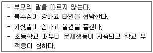
- 도벽증
- 품행장애
- 적대적 반항장애
- 반사회성 성격장애
- 주의력결핍 과잉행동장애
(정답률: 알수없음)
118. 아동기 발병 정신장애에 관한 설명으로 옳은 것을 모두 고른 것은?
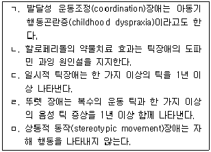
- ㄱ, ㄴ
- ㄷ, ㅁ
- ㄱ, ㄴ, ㄹ
- ㄱ, ㄷ, ㄹ
- ㄷ, ㄹ, ㅁ
(정답률: 알수없음)
119. 배설장애에 관한 설명으로 옳은 것을 모두 고른 것은?
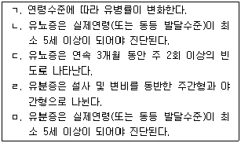
- ㄱ, ㄴ
- ㄹ, ㅁ
- ㄱ, ㄴ, ㄷ
- ㄱ, ㄹ, ㅁ
- ㄱ, ㄴ, ㄷ, ㄹ, ㅁ
(정답률: 알수없음)
120. 신체증상장애에 관한 설명으로 옳지 않은 것은?
- 신체적 이상이 동반되는 정신신체장애이다.
- 증상양상은 사회문화적 요인에 영향을 받는다.
- 건강상태 및 신체증상에 대해 불안수준이 높다.
- 증상과 건강염려에 과도한 에너지를 소비한다.
- 증상기간은 6개월 이상 지속된다.
(정답률: 알수없음)